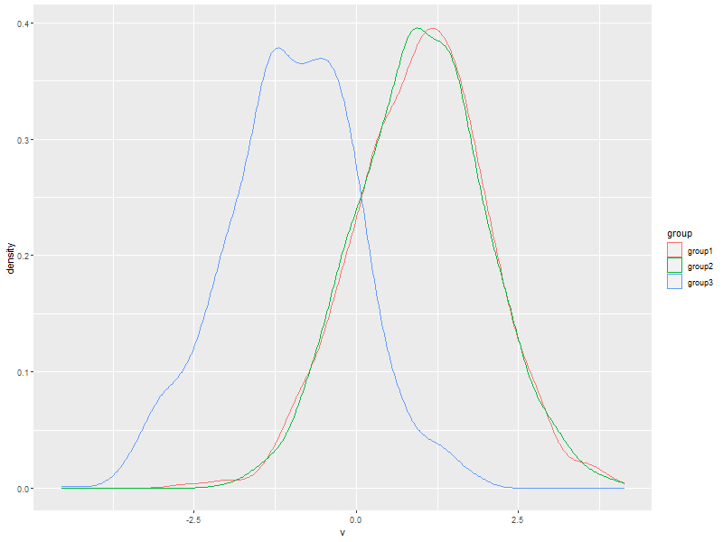

T Tests
| Author: | Mitch Richling |
| Updated: | 2021-05-04 |
Copyright 2020 Mitch Richling. All rights reserved.
Table of Contents
- 1. Source Code and Files
- 2. Some Data
- 3. Welch Two Sample t-test
- 4. Two Sample t-test
- 5. Paired t-test
- 6. One Sample t-test (not equal)
- 7. One Sample t-test (greater than)
- 8. Wilcoxon signed rank test with continuity correction
- 9. Wilcoxon rank sum test with continuity correction
- 10. Wilcoxon signed rank test with continuity correction
1 Source Code and Files
2 Some Data
popsz <- 1000 mean1 <- 1 mean2 <- mean1 mean3 <- -1 group1 <- rnorm(popsz, mean=mean1) group2 <- rnorm(popsz, mean=mean2) group3 <- rnorm(popsz, mean=mean3) allDat <- stack(list(group1=group1, group2=group2, group3=group3)) names(allDat) <- c('v', 'group')
ggplot(data=allDat, aes(x=v, col=group)) + geom_density()

3 Welch Two Sample t-test
Use when you don't know the variance of the two populations is equal
t.test(group1, group2)
null device
1
null device
1
null device
1
Welch Two Sample t-test
data: group1 and group2
t = 0.644, df = 1997, p-value = 0.5196
alternative hypothesis: true difference in means is not equal to 0
95 percent confidence interval:
-0.05877594 0.11625098
sample estimates:
mean of x mean of y
1.031484 1.002746
4 Two Sample t-test
Use when you DO know the variance of the two populations is equal
t.test(group1, group2, var.equal=TRUE)
Two Sample t-test data: group1 and group2 t = 0.644, df = 1998, p-value = 0.5196 alternative hypothesis: true difference in means is not equal to 0 95 percent confidence interval: -0.05877592 0.11625095 sample estimates: mean of x mean of y 1.031484 1.002746
5 Paired t-test
Use when the measurements in each group are related pairwise.
For example, the data could be temperature measurements taken with two thermometers each hour.
t.test(group1, group2, paired=TRUE)
Paired t-test
data: group1 and group2
t = 0.62555, df = 999, p-value = 0.5318
alternative hypothesis: true difference in means is not equal to 0
95 percent confidence interval:
-0.06141232 0.11888736
sample estimates:
mean of the differences
0.02873752
6 One Sample t-test (not equal)
Use when you want to know if the sample mean is equal to a hypothesized population mean
t.test(group1, mu=mean1) t.test(group2, mu=mean2) t.test(group3, mu=mean1)
One Sample t-test data: group1 t = 0.98655, df = 999, p-value = 0.3241 alternative hypothesis: true mean is not equal to 1 95 percent confidence interval: 0.9688595 1.0941084 sample estimates: mean of x 1.031484 One Sample t-test data: group2 t = 0.088054, df = 999, p-value = 0.9299 alternative hypothesis: true mean is not equal to 1 95 percent confidence interval: 0.9415412 1.0639516 sample estimates: mean of x 1.002746 One Sample t-test data: group3 t = -63.478, df = 999, p-value < 2.2e-16 alternative hypothesis: true mean is not equal to 1 95 percent confidence interval: -1.070877 -0.946679 sample estimates: mean of x -1.008778
7 One Sample t-test (greater than)
Use when you want to know if the sample mean is less than a hypothesized population mean
t.test(group3, mu=mean1, alternative="greater")
One Sample t-test data: group3 t = -63.478, df = 999, p-value = 1 alternative hypothesis: true mean is greater than 1 95 percent confidence interval: -1.060878 Inf sample estimates: mean of x -1.008778
8 Wilcoxon signed rank test with continuity correction
Use when you want to know if the sample mean is equal to a hypothesized population mean
wilcox.test(group1, mu=mean1)
Wilcoxon signed rank test with continuity correction data: group1 V = 259317, p-value = 0.321 alternative hypothesis: true location is not equal to 1
9 Wilcoxon rank sum test with continuity correction
Use when the measurements in each group are related pairwise. This test is also known as the "independent 2-group Mann-Whitney U Test". T-test above.
wilcox.test(group1, group2)
Wilcoxon rank sum test with continuity correction data: group1 and group2 W = 513914, p-value = 0.2813 alternative hypothesis: true location shift is not equal to 0
10 Wilcoxon signed rank test with continuity correction
Use when the measurements in each group are related pairwise. See the paired T-test above.
wilcox.test(group1, group2, paired=TRUE)
Wilcoxon signed rank test with continuity correction data: group1 and group2 V = 257264, p-value = 0.4427 alternative hypothesis: true location shift is not equal to 0